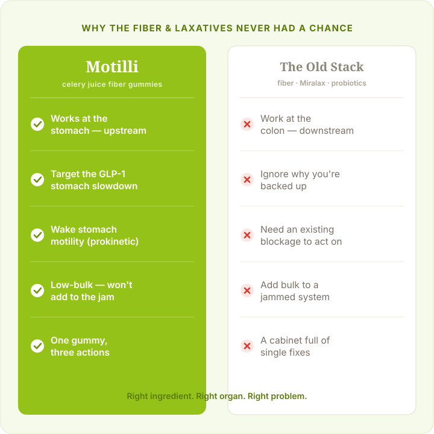
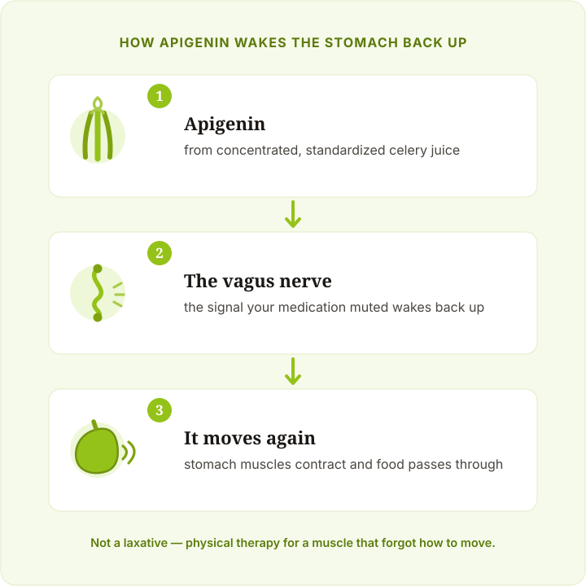

Why I Threw Out My Fiber Gummies, Miralax, and Probiotics for These Celery Juice Gummies (And Why You Should Too)
More than 1 in 4 women on GLP-1 medications are dealing with constipation so severe they've considered the ER — and most are treating the wrong organ entirely. Every fiber supplement, stool softener, and laxative in the drugstore aisle is designed for your colon. But GLP-1 constipation doesn't start in your colon. It starts in your stomach.


Your digestion works like a highway. Food enters at the on-ramp — your stomach. Travels through the middle. Exits at the off-ramp — your colon. Every product you’ve been taking works at the off-ramp.
But GLP-1 medications slow things down at the on-ramp. Your stomach loses its rhythm. Food sits there for hours, sometimes days. It ferments. Hardens. By the time anything reaches the colon — if it reaches the colon — it’s already a brick.
The colon isn’t blocked. It’s empty. The problem was never at the exit. Motilli is the first gummy that works where GLP-1 constipation actually starts — your stomach.

Miralax pulls water into the colon to soften stool. But there’s nothing sitting in your colon to soften. The blockage is in your stomach, six feet upstream.
Fiber gummies add bulk to help things pass through the colon. When food can’t get out of the stomach, adding bulk is loading luggage onto a conveyor belt that’s been unplugged.
Probiotics need food to work with. Nothing is getting through to feed them.
Motilli uses concentrated celery juice extract — a natural prokinetic that helps wake up the stomach muscles your medication put to sleep. Right ingredient, right organ, right problem.

GLP-1 medications work by slowing your stomach. That’s the whole point — it’s why you feel full after three bites. But in a lot of women, the stomach doesn’t just slow down. It stalls.
Celery juice contains a compound called apigenin that supports the vagus nerve — the nerve that tells your stomach muscles when to push food through. Your medication muted that signal. Apigenin gently reminds the stomach how to contract again. Not by forcing anything. Not by overriding the medication. Like physical therapy for a muscle that forgot how to move.

When the stomach starts pushing food through again, the downstream backup clears. Not with cramping. Not with urgency. The way it used to work — before the medication changed things.
Motilli also includes a specific type of soluble prebiotic fiber that works differently from psyllium. Instead of adding bulk to a clogged system, it draws moisture in and softens what’s stuck — without adding volume to the gridlock. It lets things clear once the stomach starts working again.
For a lot of women, that means going from counting days to not thinking about it at all.

That pressure under your ribs isn’t just uncomfortable — it’s your food fermenting. When the stomach stalls, bacteria go to work on whatever’s sitting there. Gas builds. Your abdomen swells. You lose 26 pounds on your medication and still can’t button the pants you wore before you started.
Once Motilli helps the stomach start moving again, the fermenting stops. The gas pressure drops. Women describe it as the feeling of someone slowly letting air out of a tire — not all at once, but steadily, over the first week or two.

The rotten-egg burps aren’t a separate problem. They’re a symptom of the same stalled stomach. Food sitting too long produces hydrogen sulfide — sulfur gas — and when it has nowhere to go, it comes back up.
Motilli includes chlorophyll — not the Instagram wellness kind, but a concentrated form that binds directly to hydrogen sulfide and neutralizes it before it rises as gas. It doesn’t mask the smell. It goes after the chemistry that creates it.
No more turning your head mid-conversation. No more chewing gum before every interaction. The source dries up.

You know the routine. Psyllium husk at breakfast. Magnesium powder before bed. Liquid IV in the afternoon. A probiotic. Maybe a stool softener on bad days. Five products targeting five symptoms of the same upstream problem.
Motilli combines three ingredients into one gummy — celery juice extract for stomach motility, chlorophyll for sulfur gas, and soluble prebiotic fiber for downstream flow. All three working together because the problem was never three separate things. It was one stalled stomach creating a cascade.

This is what sets Motilli apart from the digestive supplements gathering dust in your cabinet. Most of those were designed for general irregularity. General irregularity is a colon problem. Yours isn’t.
Motilli was built from the ground up for the specific way GLP-1 medications affect the stomach. The celery juice extract is concentrated and standardized for apigenin — not a dusting. The chlorophyll is dosed for gas neutralization, not decoration. The fiber is low-bulk and gel-forming, so it doesn’t add volume to an already jammed system.
This wasn’t a general digestive supplement repackaged with a new label. It was designed for exactly one problem — and that problem is yours.
After the Miralax that did nothing, the fiber gummies that made it worse, and the probiotics that were expensive placebos — you’re right to be skeptical.
That’s why Motilli comes with a 90-day money-back guarantee. You’ll know within the first two weeks if your stomach is waking up again. If it doesn’t work for you, send it back. No forms, no hassle, the risk is entirely on them.

Thin but miserable was never the only option. You just didn’t know that yet.
Women on Ozempic, Wegovy, Mounjaro, and Zepbound are using Motilli because they got tired of being told to drink more water and take more fiber — and they found something that actually addresses the organ where the problem starts. You can stay on your medication AND feel normal.
You’re not the first to try it. You’re the next to wonder why you waited.